面向 Wafer-on-Wafer 混合键合晶圆级系统的网络设计
Transformer-based LLM 训练日益受数据搬运制约，通信带宽从片上多 TB/s 到 NVLink（约 900 GB/s）再到 InfiniBand（约 100 GB/s）逐级骤降。Wafer-on-Wafer 混合键合（如 TSMC SoIC-WoW）虽能提供超高片内带宽，但同一晶圆上相邻 reticle 无法直接连线，只有上下晶圆重叠 reticle 之间可经 hybrid bond 互连，因此 reticle 的物理摆放直接决定可达网络拓扑，构成一个全新的设计空间。论文以最大化每 reticle 邻居数、最小化平均路径长度为目标，提出 Aligned、Interleaved、Rotated（面向 Logic-on-Interconnect）与 Contoured（面向 Logic-on-Logic，采用 H 形/十字形轮廓化 reticle）四种摆放方案，并用 Dijkstra 最短路径加 SCB turn model 保证无死锁、无活锁路由。基于 BookSim2 flit 级仿真、Orion3.0 面积功耗模型（缩放至 7nm）以及 ATLAHS 采集的 Llama-7B 训练 trace 回放，吞吐最高提升 250%、延迟最高降低 36%、每字节能耗最高降低 38%；LLM trace 下平均延迟降至 baseline 的 60%、最好情况 37%。其'物理约束驱动的拓扑优化'与 trace 驱动性能建模方法，对团队 UCIe/多 die 互连架构预研有直接借鉴价值。
LLM 训练受数据搬运制约，带宽从片上互连（多 TB/s）到 NVLink（约 900 GB/s）再到 NDR InfiniBand（约 100 GB/s）逐级骤降。Wafer-on-Wafer 混合键合 WSI 提供超高内部带宽，但该集成方式下同一晶圆上相邻 reticle 无法直接连线，只有上下晶圆重叠 reticle 之间可通过 hybrid bond 建立链路，因此 reticle 在两片晶圆上的物理摆放决定了可达网络拓扑。此前没有针对 wafer-on-wafer hybrid bonding WSI 的网络设计工作，如何在该几何约束下优化拓扑以提升吞吐、降低延迟与能耗是论文要解决的核心问题。
以最大化上下晶圆重叠 reticle 数（即网络 radix）来最小化平均路径长度为优化目标，提出四种 reticle 摆放：Aligned（interconnect reticle 旋转 90° 对齐，连接最多 6 个 compute reticle）、Interleaved（交错摆放）、Rotated（interconnect reticle 缩小至 22.98×32.53 mm 并旋转 45°，compute reticle radix 提升至 7）、Contoured（LoL 场景下用 H 形与十字形轮廓化 reticle 实现 radix-5）。路由采用 Dijkstra 只返回最短路径保证无活锁，配合 SCB（simple cycle-breaking）turn model 保证无死锁；选择函数评估 random 与 local adaptive 两种。评估使用 BookSim2 flit 级仿真（wormhole 路由 + credit-based 流控）、Orion3.0 面积功耗模型经 DeepScaleTool 缩放到 7nm，以及 ATLAHS 工具链采集的 Llama-7B 训练 GOAL trace 回放；链路为每方向 2 TB/s @1GHz 的流水线互连，每 2 mm 一个流水级。
相比 baseline 2D mesh-like 拓扑，四种摆放使吞吐最高提升 250%，平均包延迟最高降低 36%，每传输字节能耗最高降低 38%
Llama-7B 训练 trace 仿真中，平均网络延迟降至 baseline 的 60%，最好情况降至 37%，改善幅度超过合成流量实验
Rotated 摆放将 compute reticle radix 从 4 提升至 7，每个 interconnect reticle 与最多 7 个 compute reticle 重叠，在 10 μm HB pitch 假设下每个垂直连接器有超过 10 mm² 可用面积，支持最高 6 TB/s 链路
Aligned 摆放将每个垂直连接器的重叠面积从 214.5 mm² 降至 45.5 mm²，但 10 μm pitch 下仅需 3.2 mm² 即可实现双向 2 TB/s @1GHz 链路
Contoured 摆放在 2 TB/s 链路下 reticle 面积为 reticle limit 的 98.5%
实验覆盖 48 个架构-摆放组合，每个组合 3 次 8 小时 BookSim2 仿真，平均每次传输 117 万个包
论文指出此前没有针对 wafer-on-wafer hybrid bonding WSI 的网络设计工作；已有 chiplet-based WSI 研究（FRED 的 Clos-like 拓扑、Network-on-Wafer、WSCLLM、Simba 等）采用的拓扑在 WoW 混合键合的几何约束下不可行（如 Clos-like 拓扑）。核心区别是把网络拓扑优化转化为 reticle 物理摆放优化——拓扑由上下晶圆重叠 reticle 的连接关系'涌现'，通过最大化邻居数（radix 最高 7）缩短平均路径长度，而非在固定拓扑上做路由或调度优化。
相关度级别：high
命中能力域：2.1 IP 架构与微架构
理由：论文直接命中 2.1'IP 架构与微架构'中的 chiplet/多 die 集成架构与 workload-driven 性能建模：研究对象是基于 TSMC SoIC-WoW 混合键合的多 die（晶圆级）系统的互连架构，评估方法为 trace 驱动的 BookSim2 性能建模，并给出面积/功耗 PPA 权衡。其'物理摆放约束决定拓扑'的设计思路、垂直连接器带宽-面积估算（HB pitch → 可实现链路带宽）以及无死锁路由（SCB + Dijkstra）对团队 UCIe 等高速互连 IP 的架构定义与未来 3D/WoW 类产品预研有直接参考价值；但论文不涉及 RTL 实现、验证方法学与时序物理实现，对 2.2~2.7 无直接关联。
建议动作：深入精读并做内部分享
arXiv:2603.05266v2 [cs.AR] 2026年3月24日
Patrick Iff
苏黎世联邦理工学院（ETH Zurich）
瑞士苏黎世
iffp@inf.ethz.ch
基于 Transformer 的大语言模型日益受到数据搬运的制约，因为通信带宽在超出芯片边界后会急剧下降。采用晶圆对晶圆（wafer-on-wafer）混合键合的晶圆级集成，通过在键合晶圆上各光罩（reticle）之间提供超高带宽，缓解了这一限制。在本文中，我们研究光罩在晶圆上的物理布局如何影响可实现的网络拓扑以及由此产生的通信性能。从类二维网状（2D mesh）的基线出发，我们提出了四种光罩布局方案（Aligned、Interleaved、Rotated 和 Contoured），它们可将吞吐量最高提升 250%，将延迟最高降低 36%，并使每传输字节的能耗最高降低 38%。
晶圆级集成、三维集成、互连
实现晶圆级集成（wafer-scale integration）有多种途径。特斯拉的 Dojo [35] 通过将各个小芯片（chiplet）放置在扇出晶圆（fan-out wafer）上，把 25 个面积为 645 mm² 的硅裸片集成到一个单一的晶圆级系统中，这种方法被称为基于小芯片的晶圆级集成（chiplet-based wafer-scale integration）。Cerebras [28] 则采用场拼接（field stitching）[10] 来克服 26 × 33 mm 的掩模版（reticle）尺寸限制。场拼接在相邻掩模版曝光之间引入一个较小的、有意设置的重叠区，以在接缝处对齐电路图形，并形成跨越掩模版边界的连续导线。在本文中，我们聚焦于第三种方法——晶圆对晶圆混合键合（wafer-on-wafer hybrid bonding），即台积电（TSMC）的 SoIC-WoW 工艺 [9] 所提供的方案：两片晶圆分别采用掩模版进行图形化，并以面对面（F2F）方式键合，从而构成一个单一的晶圆级芯片。同一晶圆上的各掩模版区域无法直接互连，但通过在两片晶圆上交错排布掩模版，并借助混合键合（hybrid bonds, HBs）将其垂直连接起来，即可在所有掩模版区域之间构建出一个全连接网络。
与基于芯粒的晶圆级集成（WSI）相比，晶圆间混合键合的一个关键优势在于 HB 极小的间距：在量产工艺中低于 10 𝜇𝑚 [27]，在研究原型中可达 1 𝜇𝑚 [19]。与基于芯粒的晶圆级集成中的裸片间（die-to-die, D2D）链路不同——后者需要在两端配置专用的、占用面积大且功耗高的物理层（PHY）以进行协议、频率和电压转换——混合键合则无需 PHY，因为其电气特性与顶层金属层相近。此外，D2D 链路的带宽通常受限于可用微凸点（microbump）的数量 [14, 15]，而混合键合的精细间距则将瓶颈转移到了从 HB 到路由器的布线上，或转移到路由器面积本身。我们使用“垂直连接器”（vertical connector）一词来描述实现晶圆间一条链路的一组 HB。要在两个掩模版之间构建一条链路，这两个掩模版必须位于相对的两片晶圆上，并且它们的垂直连接器必须精确对准。
在本节中，我们描述了本工作中所考虑的不同架构选择与布线策略。
我们面向适合由类图形处理器（GPU）架构加速的机器学习（ML）与高性能计算（HPC）工作负载。每个 26 × 33 mm 曝光区域（reticle）包含一个具有八个图形处理集群（GPC）的 GPU 以及本地静态随机存取存储器（SRAM）。
集成层级：我们探索两种垂直集成层级。在逻辑-互连（logic-on-interconnect，LoI）方案中，仅顶层晶圆包含计算曝光区域（即 GPU），而底层晶圆纯粹作为互连层。将系统限制为单个直接连接到散热器的计算晶圆，可简化热管理与供电。第二种集成层级称为逻辑-逻辑（logic-on-logic，LoL），它在两片晶圆上都放置计算曝光区域，并将互连集成到计算曝光区域之中。尽管该方案如今在技术上已经可行，但功耗与散热约束仍是主要挑战。我们预计，通过提升能效或采用先进冷却技术（如热硅通孔 [1] 或微流体冷却 [7]），LoL 将在未来几年内变得可行。
晶圆直径：我们分析 300 mm 晶圆（代表当前半导体制造的主流）以及仍在一些较老晶圆厂中使用的 200 mm 晶圆。
？ 晶圆利用率：我们分析两种晶圆利用率水平。文献中的常见做法是在晶圆上组装由小芯片（chiplet）或曝光区域构成的矩形二维网格 [35, 38, 41]。我们还考虑了通过在晶圆上紧密排布尽可能多的曝光区域来最大化晶圆利用率的情况。这使得硅片面积得到更高效的利用，并且重要的是，可构建出计算能力更强、集成密度更高的系统。由于晶圆-晶圆混合键合消除了曝光区域之间对切割道的需求，我们在模型中省略了曝光区域之间的间距，因为剩余的微米级间距对结果没有明显影响。
我们假设采用虫孔路由（wormhole routing）与基于信用的流控（credit-based flow control）的分组交换网络。遵循 Yin 等人 [40] 的做法——他们将全局网络抽象为单个路由器，以便单独优化小芯片的本地网络——我们将每个计算曝光区域的本地网络抽象为单个路由器，从而独立地优化晶圆级网络。因此，一个计算曝光区域被建模为一个路由器，该路由器连接所有 GPC 以及该曝光区域的垂直连接器。对于 LoI 中的互连曝光区域，我们显式建模路由器及其连接链路。
路由算法由两个部分组成：路由函数与选择函数，二者均在分组穿越路由器时被调用。路由函数返回一个确保无死锁与无活锁的输出端口列表，选择函数再从中选择一个端口。我们的路由算法应用 Dijkstra 算法 [8] 仅返回最短路径，从而确保分组持续向目的地推进，进而保证无活锁。该算法还采用简单破环（simple cycle-breaking, SCB）算法 [25]——一种适用于任意拓扑的转弯模型（turn model）[11] 变体——来保证无死锁。
选择函数：我们评估了两种不同的选择函数：random，随机选择一个输出端口；以及 local adaptive，选择通往输入缓冲区可用空间最大的路由器的端口。由于相邻路由器的输入缓冲区占用情况可通过基于信用的流控获得，因此无需额外的开销来传递拥塞信息即可实现自适应选择函数。
网络拓扑可以说是网络架构中最关键的方面。在晶圆-晶圆混合键合中，链路只能连接相对晶圆上相互重叠的曝光区域；因此，拓扑由曝光区域的布局决定，而对布局的优化正是本工作的核心贡献。
在本节中，我们对网络拓扑进行优化。以往针对网络拓扑的研究，从超级计算机 [3, 23] 到片上网络（NoC）[2, 18] 以及芯片间互连（ICI）[4, 14, 15, 21]，主要聚焦于最小化网络直径和平均路径长度。降低这些指标能够减少延迟、缓解拥塞并提升吞吐量。在晶圆-晶圆混合键合系统中，只有相互重叠的曝光区域之间才能实现链路，因此要优化拓扑就必须优化曝光区域的布局。
| Integration Level | Wafer Diameter | ? Wafer Utilization | Placement | Number of Compute Reticles (26 × 33mm) | Number of Interconnect Reticles ( ≈ 26 × 33mm) | Radix of Compute Reticles | Radix of Interconnect Reticles | Network Diameter | Average Path Length (Hops) | Total Bisection Bandwidth |
|---|---|---|---|---|---|---|---|---|---|---|
| Interconnect | 200mm | Rec. | Baseline | 20 | 26 | 4 | 4 | 8 | 4.08 | 16.00 |
| Interconnect | 200mm | Rec. | Baseline | 20 | 10 | 4 | 6 | 6 | 3.30 | 16.00 |
| Ours Aligned Ours Interleaved | 20 | 12 | 4 | 6 | 8 | 3.44 | 16.00 | |||
| Ours Rotated | 20 | 20 | 7 | 7 | 6 | 2.84 | 32.00 | |||
| Max. | Baseline | 26 | 26 | 4 | 4 | 12 | 4.80 | 16.00 | ||
| Max. | Ours Aligned | 26 | 12 | 4 | 6 | 10 | 3.91 | 16.40 | ||
| Ours Interleaved | 26 | 14 | 4 | 6 | 10 | 3.89 | 16.00 | |||
| Ours Rotated | 27 | 25 | 7 | 7 | 6 | 3.20 | 38.00 | |||
| Logic on | Rec. | Baseline | 49 | 56 | 4 | 4 | 12 | 6.44 | 27.20 | |
| Logic on | Rec. | Ours Aligned | 49 | 28 | 4 | 6 | 12 | 5.53 | 28.00 | |
| Logic on | Rec. | Ours Interleaved | 49 | 26 | 4 | 6 | 12 | 5.57 | 24.00 | |
| Logic on | Rec. | Ours Rotated | 48 | 48 | 7 | 7 | 10 | 4.19 | 47.60 | |
| 300mm | Baseline | 64 | 63 | 4 | 4 | 18 | 7.45 | 26.00 | ||
| 300mm | Ours Aligned | 64 | 31 | 4 | 6 | 14 | 5.83 | 31.20 | ||
| Max. | Ours Interleaved | 64 | 31 | 4 | 6 | 14 | 6.04 | 28.20 | ||
| Max. | Ours Rotated | 66 | 63 | 7 4 | 7 - | 10 10 | 4.76 4.40 | 64.20 | ||
| Rec. | Baseline | 46 | 0 | 16.00 | ||||||
| Logic | 200mm | Ours Contoured | 40 | 0 | 5 | - | 8 | 3.52 | 16.00 | |
| Logic | 200mm | Ours Contoured | 54 | 0 | 4 | - - | 12 | 4.71 | 16.00 | |
| on | Max. | Baseline | 52 | 0 | 5 | 10 | 3.93 | 21.20 | ||
| on | Max. | Ours Contoured | 105 | 0 | 5 | 28.00 | ||||
| Logic | 300mm | Rec. | Baseline | 4 | - | 14 | 6.66 | 27.20 | ||
| Logic | 300mm | Max. | Baseline Ours Contoured | 96 127 132 | 0 0 0 | 4 5 | - - - | 12 20 16 | 5.20 7.42 6.01 | 25.60 36.00 |
| Integration Level | Wafer Diameter | ? Wafer Utilization | Placement | Number of Compute Reticles (26 × 33mm) | Number of Interconnect Reticles ( ≈ 26 × 33mm) | Radix of Compute Reticles | Radix of Interconnect Reticles | Network Diameter | Average Path Length (Hops) | Total Bisection Bandwidth |
我们的方法是通过最大化两片晶圆之间相互重叠的曝光区域数量（即网络的度，radix）来最小化平均路径长度。虽然我们给出的结果是针对处于 26 × 33 mm 光刻极限尺寸的曝光区域的，但所有优化技术同样适用于其他曝光区域尺寸。表 1 列出了所有已提出的曝光区域布局所对应的曝光区域数量、度（radix）、直径、平均路径长度以及估计的对分带宽（对采用不同随机种子的十次 METIS [22] 运行结果取平均）。其中直径和平均路径长度以曝光区域到曝光区域的跳数计算，而非路由器到路由器的跳数。
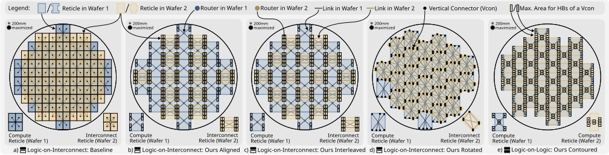
1 所有网络拓扑以图形式呈现的可视化结果可在我们的代码仓库中获取：https://github.com/spcl/nw-design-for-wsi 。
约束条件。我们再次假设给定晶圆上的所有光罩（reticle）均相同。在 LoI 系统中，只有铺满晶圆平面所需的计算光罩和互连光罩之间可以留有间隙；而在 LoL 系统中，两片晶圆均包含计算光罩，必须铺满整个平面以最大化集成密度。
基线。我们采用与 LoI 系统相同的基线布局（见图 1a）。唯一的区别在于，此时两片晶圆都包含相同的 radix-4 计算光罩。
优化方案“Ours Contoured”。由于 LoL 系统为最大化集成密度而禁止光罩之间留有间隙，三种依赖于互连光罩之间间隙的 LoI 优化方案均不适用。因此，我们提出一种新的 radix-5 布局，在两片晶圆上均使用轮廓化光罩（contoured reticles）。下层晶圆采用 𝐻 形光罩，而上层晶圆采用十字形（plus-shaped）光罩（见图 1e）。通过将这些形状的中心对齐，每个光罩最多可与对面晶圆上的五个光罩相连。图 1e 所示的布局仅为示意图，其中的轮廓化程度被刻意夸大，使得光罩总面积看起来远小于光罩面积上限。在实际应用中，轮廓化仅限于达到目标链路带宽所需的最小程度（例如，对于 2 TB/s 的链路，光罩面积为光罩面积上限的 98.5%）。
延迟。我们使用 BookSim2 在低注入率下进行仿真以测量零负载延迟，根据每条链路的物理长度配置其延迟，并为晶圆之间的每个垂直连接器分配一个周期的延迟。
吞吐量。我们在 BookSim2 中以 10%、1%、0.1% 和 0.01% 的增量逐步提高注入率，以准确确定网络的饱和吞吐量（即延迟超过零负载延迟两倍的点）。图 2 展示了一条延迟-负载曲线，其中每个点代表在特定注入率下进行的一次 BookSim2 仿真。
面积。我们使用 Orion3.0 估算片上网络（NoC）路由器的面积，假设输入缓冲区采用静态随机存取存储器（SRAM）而非触发器实现。由于与逻辑工艺缩放相比，SRAM 的缩放已趋于停滞，我们采用 0.2 的缩放因子将 SRAM 面积从
45 nm 缩放至 7 nm，这比 DeepScaleTool 的面积缩放因子 0.0271 更为保守。
功耗与能量。我们使用 Orion3.0 估算每个 NoC 路由器的功耗。对于带缓冲的链路，我们利用 BookSim2 的结果，通过从零负载延迟中减去平均跳数与路由器延迟的乘积，来估算每个 flit 平均经过的流水线级数。我们假设每比特每流水线级 2 pJ 的保守能量，这与先前工作 [37] 一致。由于混合键合（HB）的能耗可以忽略不计 [37]，我们未对其进行显式建模。我们的分析表明，在晶圆级架构中，链路功耗比路由器功耗高出数个数量级，因此我们仅报告网络总功耗，而不区分路由器功耗与链路功耗。
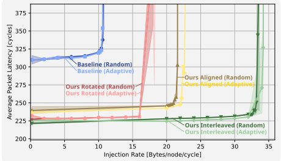
5.2.1 延迟与吞吐量。图 2 展示了在随机置换流量下，采用 300 mm 晶圆且晶圆利用率最大化的 LoI 系统上，我们的四种光罩（reticle）布局与两种选择函数的详细延迟-负载曲线。其余 31 个实验的类似图可在我们的开源代码库 2 中获取。由于篇幅限制，我们在图 3 至图 6 中以热力图的形式总结了延迟与吞吐量结果，这些热力图展示了相对于基线布局的改进。对这些热力图进行分析，有助于深入了解我们所提出的布局在不同系统配置和流量模式下的性能表现。
我们的 Aligned 与 Interleaved 布局在晶圆利用率最大化的所有系统中，于提升吞吐量的同时降低了延迟。在矩形利用率下，它们在大多数情况下仍能改善这两项指标，但在 tornado 和 neighbor 流量下可能表现不及 Baseline。Rotated 布局则在所有架构和流量模式下均始终优于 Baseline。面向 LoL 系统的 Contoured 布局在大多数情况下提升了吞吐量，同时保持与 Baseline 相近的延迟。自适应选择函数在与随机选择函数相当的延迟下略微提高了吞吐量。总体而言，我们的优化布局在最大化晶圆利用率下比在矩形晶圆利用率下取得更强的改进，在 LoI 系统中比在 LoL 系统中取得更强的改进，而晶圆直径仅有轻微影响。此外，对于 random uniform 和 random permutation 流量，性能提升也比 tornado 和 neighbor 流量更为一致。
2 https://github.com/spcl/nw-design-for-wsi
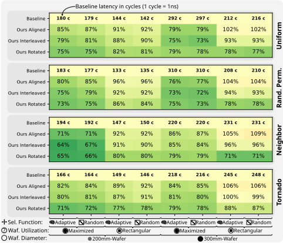
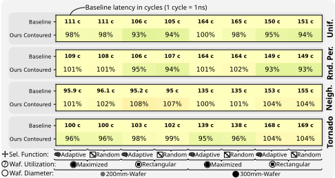
3 https://github.com/spcl/nw-design-for-wsi
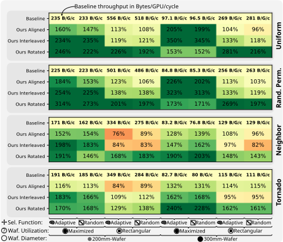
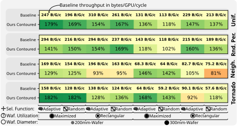
到全局数据移动。请注意，功耗是在饱和吞吐量下进行评估的。由于平均网络利用率通常远低于 100%，正常运行时的实际功耗将低得多。每字节能耗表明，我们的优化布局通常通过缩短平均路径长度来提升效率，而较高的总功耗主要源于饱和吞吐量的提高。
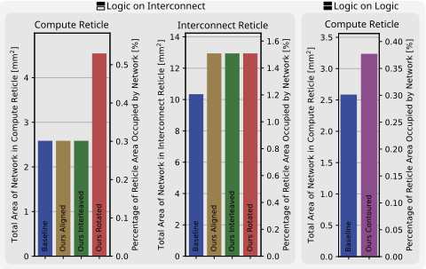
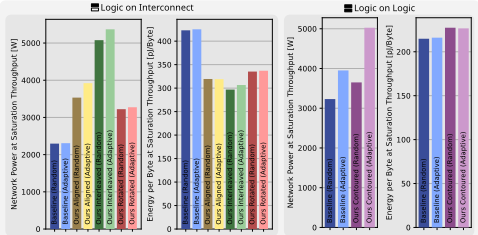
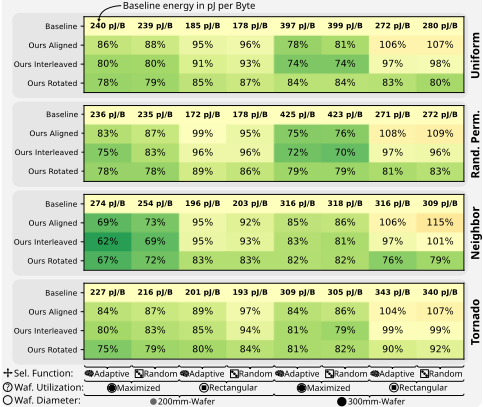
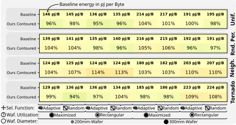
图 11 展示了运行 Llama-7B 训练轨迹时观察到的平均网络延迟。在这些仿真过程中，网络在高负载且严重拥塞的阶段与计算占主导的低负载阶段之间交替变化。这种升高的拥塞导致平均延迟显著高于合成流量实验中的延迟，在合成流量实验中，零负载延迟反映的是无争用情况下的延迟。我们的结果表明，对于大语言模型（LLM）训练工作负载，我们提出的布局所实现的延迟降低幅度超过了合成流量实验中测得的幅度。平均而言，延迟降至基线的 60%，最佳情况下降至 37%。尽管这些优化布局对所有架构均有益处，但对于 LLM 训练而言，其在 300 mm 晶圆上带来的改进大于在 200 mm 晶圆上，在 LoI 系统上带来的改进大于在 LoL 系统上。
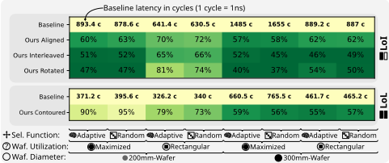
台积电（TSMC）凭借其 SoIC 技术提供具有细间距互连的晶圆对晶圆混合键合，其技术路线图 [9] 预计互连密度将每两年翻一番。如此快速的扩展只有借助混合键合工艺的最新进展才得以实现 [19]，Lau 等人 [24] 对此进行了全面综述。关于晶圆级计算的更广泛概述，我们建议读者参阅 Hu 等人 [13]。
尽管此前尚无工作针对基于晶圆对晶圆混合键合的晶圆级集成（WSI）系统研究网络设计，但已有若干研究围绕基于芯粒（chiplet）的 WSI 探索了相关方向。FRED [31] 在晶圆级系统中采用类 Clos 拓扑来加速深度神经网络（DNN）训练中的集合通信操作，但在晶圆对晶圆混合键合的几何约束下，此类拓扑并不可行。Network-on-Wafer [39] 针对晶圆级系统对拓扑、路由和集合通信操作进行协同设计，并假设每条链路带宽为 2 TB/s，这与 Tesla Dojo [35] 以及我们的工作类似。WSCLLM [38] 使用 2D 网格（mesh）拓扑进行裸片间通信，探索了架构与调度的联合优化。其他采用 2D 网格拓扑、并为我们采用类网格基线提供了动机的研究包括：晶圆级 AI 加速器 Simba [33]、一种晶圆级 GPU 架构 [30]，以及由加州大学洛杉矶分校（UCLA）和伊利诺伊大学厄巴纳-香槟分校（UIUC）开发的含 2048 个芯粒的晶圆级系统 [29]。
晶圆对晶圆混合键合（wafer-on-wafer hybrid bonding）是一种前景广阔且现成可用的技术，可用于实现具有高带宽互连的晶圆级集成（WSI）。网络拓扑必须由相对晶圆上相互重叠的掩模版（reticle）之间连接而成的这一约束，催生了一个全新且尚未被探索的设计空间。在本工作中，我们通过优化顶层晶圆与底层晶圆上掩模版的布局，以最大化每个掩模版的邻居数量，从而最小化网络的平均路径长度，进而探索了上述设计空间。
我们的全面评估表明，在所考虑的几乎所有集成度、晶圆直径、晶圆利用率和工作负载下，我们提出的掩模版布局均显著改善了吞吐量、延迟和能效。我们实现了高达 250% 的吞吐量提升、高达 36% 的延迟降低以及高达 38% 的能耗降低。